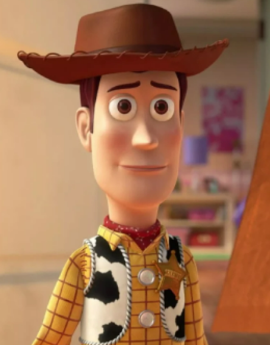
Woody
Toy Story
Woody is een cowboypop en de favoriete van Andy. Hij is loyaal, moedig en een geboren leider.
Eigenschappen
Geschiedenis
Woody is een traditioneel speelgoed, met een stemkastje dat je aan een touwtje kunt trekken en details die aan een cowboy doen denken.
Hij heeft lange tijd een ereplaats ingenomen als favoriet onder de speeltjes van de zesjarige Andy totdat Buzz Lightyear neerstort en zijn wereld op zijn kop zet.
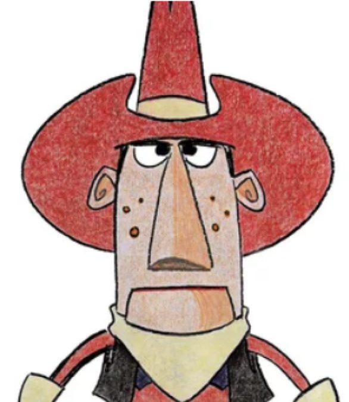
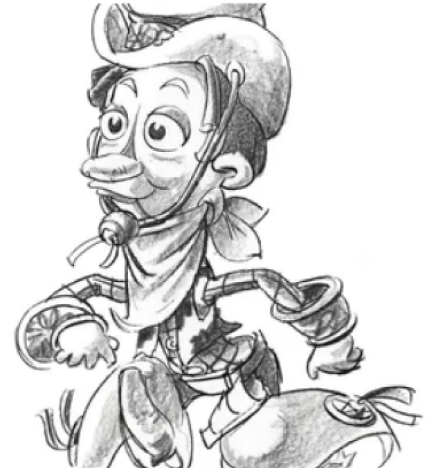
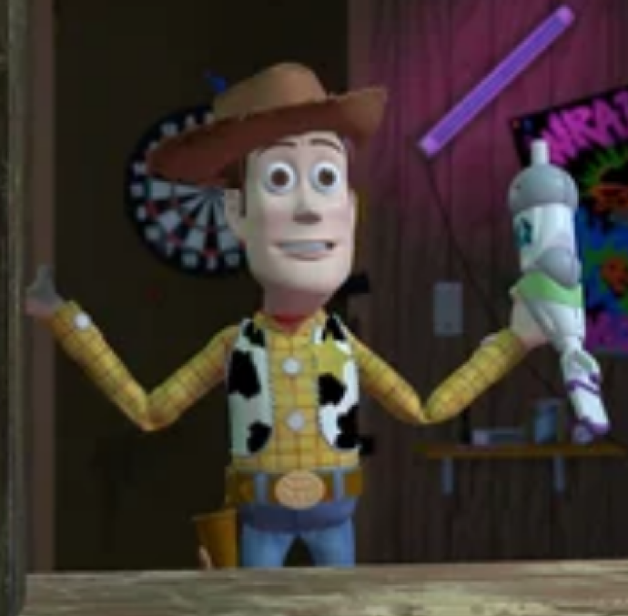
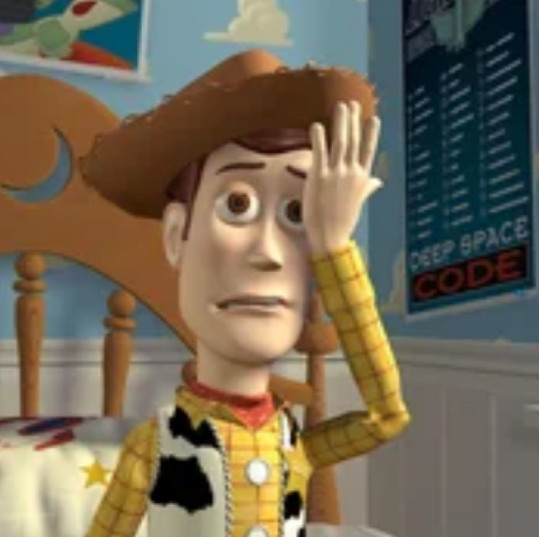
karakter stem
Vrienden
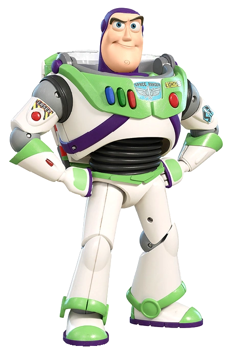
Buzz Lightyear
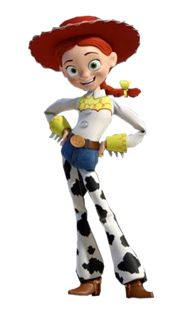
Jessie
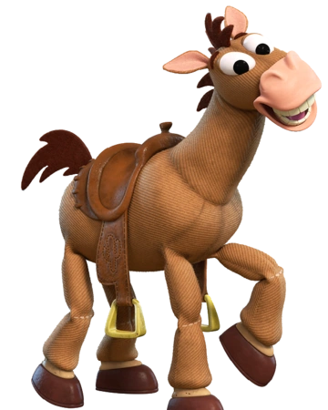
Bullseye
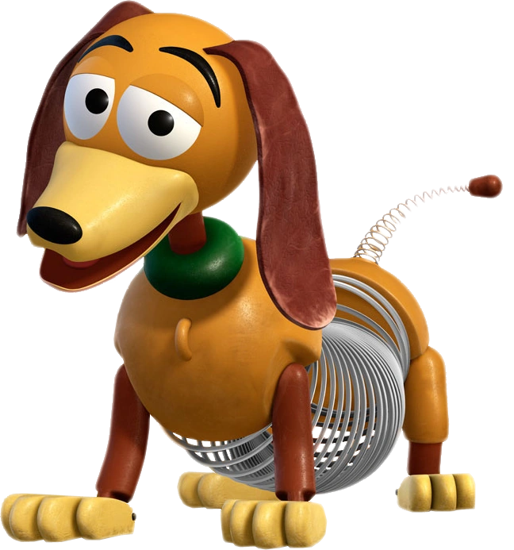
Slinky dog
🙂 Fun facts
Wist je dat Woody uit Toy Story wordt ingesproken door Tom Hanks?
💡 Quiz (Test jezelf)
Wat staat er onder de schoen van Woody in Toy Story?
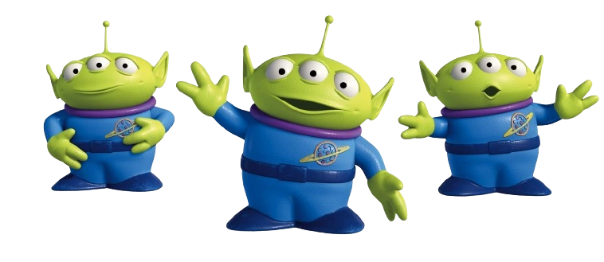
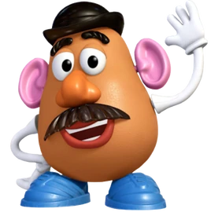